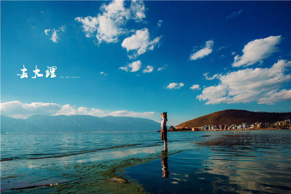
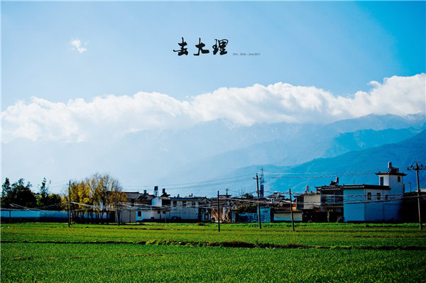
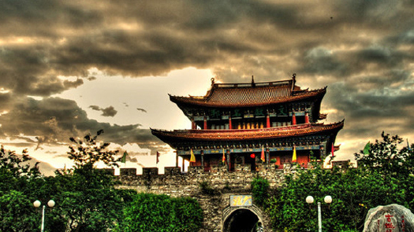
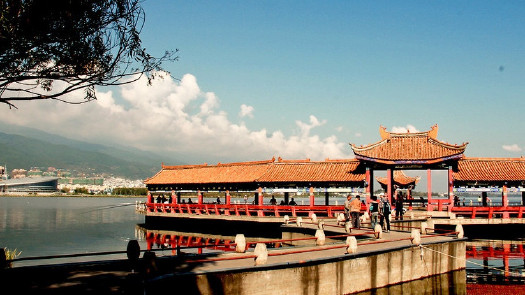
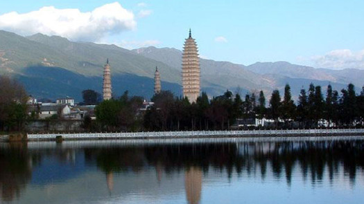
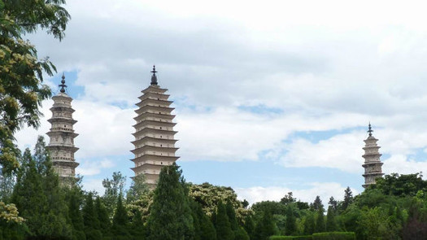

走进大理
01 / 魅力洱海
洱海位于云南大理市区的西北，自古以来一直被称作“群山间的无瑕美玉”，是大理“风花雪月”四景之一“洱海月”之所在。 据说因形状像一个耳朵而取名为“洱海”，素以“高原明珠”著称。从空中往下看，洱海宛如一轮新月，静静的依卧在苍山和大理坝子之间。泛舟洱海，给人一种“船在碧波漂，人在画中游”的诗画般的意境。洱海公园，是观赏苍山洱海景色的好处所。 湖内有“三岛”、“四洲”、“五湖”、“九曲”之胜。三岛：金梭岛、赤文岛、天儿岛;四洲：青莎鼻、大贯础、鸳鸯、马帘;五湖是：南塘湖、北塘湖、联株湖、龙湖、波洲湖;九曲是：莲花曲、大激曲、皤肌曲、凤翼曲、萝肘曲、牛角曲、波垠曲、高岩曲。洱海还有许多美丽的海湾，其中较大的有海东湾、挖色湾、康榔湾、双榔湾。尤以海中"三岛，使洱海变得更加绮丽。 大理“风花雪月”四景：下关风、上关花、苍山雪、洱海月
最佳季节
6月-8月最佳，舒适自在。 大理季节变化不明显，没有明显的严冬酷暑，寒暑适中，四季如春。值得宜。一提的是，中秋节晚上，居住在大理洱海边的白族人家都要将木船划到洱海中欣赏美丽的“洱海月”。
02 / 大理古城
大理古城东临碧波荡漾的洱海，西倚常年青翠的苍山，形成了“一水绕苍山，苍山抱古城”的城市格局。由南城门进城，一条直通北门的复兴路，成了繁华的街市，沿街店铺比肩而设，出售大理石、扎染等民族工艺品及珠宝玉石。街巷间一些老宅，也仍可寻昔日风貌，庭院里花木扶疏，鸟鸣声声，户外溪渠流水淙淙，“三家一眼井，一户几盆花”的景象依然。古城内东西走向的护国路，被称为“洋人街”。这里一家接一家的中西餐馆、咖啡馆、茶馆及工艺品商店，招牌、广告多用洋文书写，吸着金发碧眼的“老外”，在这里流连踯躅，寻找东方古韵，渐成一道别致的风景。 大理古城可以算是全云南外来长住人口最多的古城景区。在很多人眼里这里是文艺青年的聚集地和理想主义者的后花园。以前的媒体人，作家，公务员等等在这里变身成为人民路地摊摊主，某个小吃店的厨师，某家客栈的掌柜……肤色不同的他们从世界各地来到这里，选择了一种更自然更接地气的生活方式。所以在古城某个别致的小店或摊位上，哪怕菜市场，你都有可能邂逅一位有这样故事的人。
最佳季节
3-4月。白族的很多节日和盛会多集中在每年的3至4月间，此时来游，会感受到浓郁的民族风情。有歌唱到："大理三月好风光"，所以在春季，无论是前往大理古城，或是登苍山、游洱海，都再适合不过了。
03 / 崇圣寺三塔
崇圣寺三塔是国务院首批公布的全国重点文物保护单位，是历史文化名城、全国优秀旅游城市大理的标志和象征，是大理国家级旅游风景名胜区的重要人文景观，也是中国南方最古老，最雄伟的建筑之一。 西有苍山十九峰如屏风耸立，东有250平方公里的洱海像镜面展开，山海之间田畴万顷，白族村庄星罗棋布，崇圣寺三塔旅游区，就座落在这如诗如画的名山胜水之间。 三座塔变化中有和谐，对立中有统一，互相依衬，浑然天成，背后是终年积雪的苍山，前面是碧波荡漾的饵海，与“玉洱银苍”浑然一体，展现出一种自然、典雅的东方美。 出土文物展馆中展出有1978年至1980年，对三塔进行自明嘉靖以来规模最大的一次维修，维修时出土南诏、大理国时期的珍贵文物，有680多件，是迄今所发现的南诏大理国时期文物最为丰富、最为重要的一批，为中外文物界所瞩目。
最佳季节
3-4月最佳，有许多节日盛会。 白族的很多节日和盛会多集中在每年的3至4月间，此时来游，会感受到浓郁的民族风情。可以在三月街（农历三月十五--三月二十一日，大理城西三月街街场）和蝴蝶会（农历四月十五日蝴蝶泉）的时候去。同时大理年平均气温在15度左右，经过寒冬，正直春暖花开、雨季到来之前，所以也就是农历三月到四月是大理旅游的最佳季节。